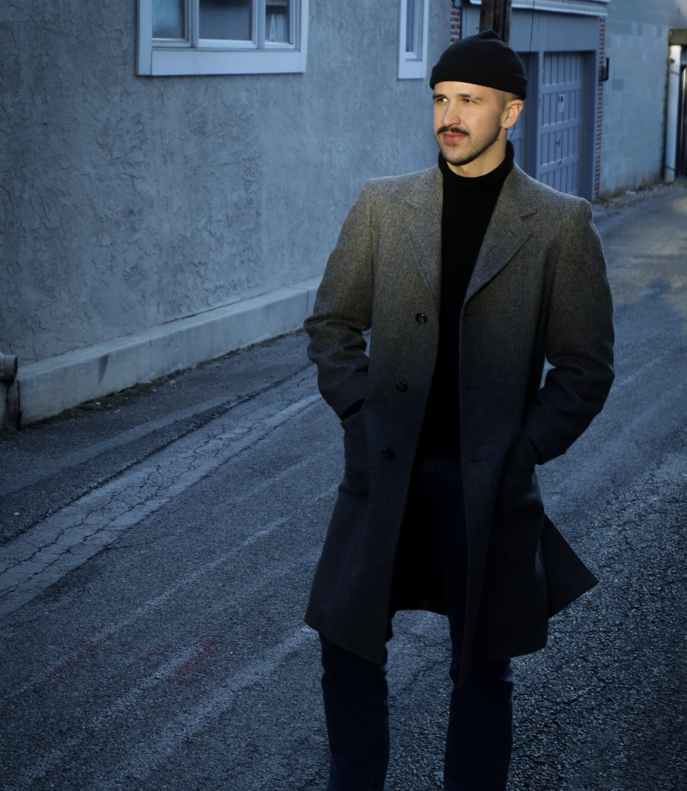

january
If on mobile, click here.
Remnants believes what is most interesting about each person
is what they do and think about between what they do and
think about. Large categories dominate our lives — work,
leisure, relationship, hobbies — and our identities are often secured by these categories. But what about all the in between moments? All the things we do and think about that don't fit neatly into a category?
We are introducing remnants to fill this gap. To provide a
space for us to put forth and showcase parts of our lives that
cannot be packaged into these categories. To be and create
how we want to be and create. And to demonstrate how we
can secure our own identities for ourselves across the various
categories and gaps of our lives.
We hope you enjoy this first collection.

It started earnestly. Getting something a bit different when shopping before the new school year: a cool shirt from Kohl's or Old Navy, something I hadn't worn before. I was limited by these local department stores and retail chains, but still, these little steps led me into an interest area.
_______
Later, a year in France didn't hurt — it exposed me to a lot of style I hadn't seen before. It was there that I became aware of the street. I learned that I wanted to be seen – that I liked the feeling of strangers' eyes looking at me. What do they see? What do they think of me?
With the arrival of Covid, any possibility of being seen by the stranger was swiftly dismissed. Nobody saw me. Before long, I felt I could no longer see myself. I was folding into repeated routines and slow schedules. The allure and rush of changing my appearance fell flat.
_______


_______
Only after several months was I able to resuscitate it. A teasing
lull in the pandemic helped. Also, posting photos of myself.
Breaking down this self-conscious barrier led me to rediscover
some of my earlier excitement amidst the dark grey weight of
the pandemic.
Soon, I understood my excitement as an act of self-
affirmation: I have put together this outfit with thought and
intention, I was saying, and by sharing it publicly I affirm my
vision of myself. Unable to be seen physically, I discovered a way
to be seen digitally — to force myself to be seen.

_______

if i were
to remain here
stoic and stolid
as a marble column
would winding vines
climb me too?
or would they shy
away from my
gleaming surface
afraid to spoil
my smooth exterior
the product of
a fierce activity between
rock, artist, and chisel
untainted
but untouched
_______
by jack and rob